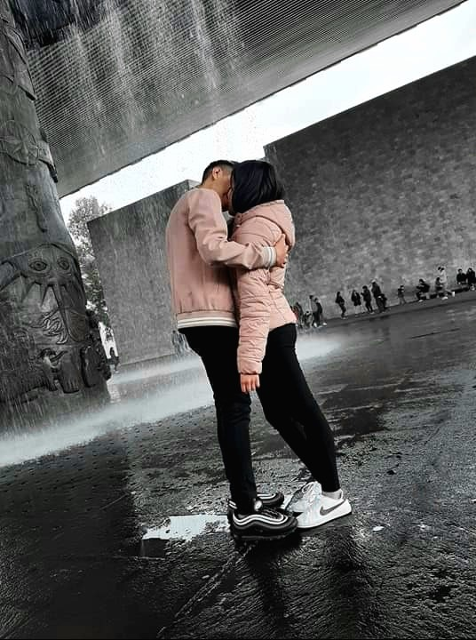

Bienvenida a esta pagina Fraggersita
1¿Por que hice esta pagina?
Bueno esta página la comencé a hacer desde que te conocí, tal vez esta idea te sonara rara, pero sabia que entre más me conozcas ibas a ver que no paro de dar sorpresas jeje, pero bueno yo ya sabía que me quedaba poco tiempo de vida y la verdad comenzaste a ser una niña muy importante en mi mugrosa vida, así que decidí escribir cosas horribles que pasaron en mi vida, pero lo más importante cosas que hicimos juntos, la verdad quería que pasáramos mas momentos juntitos, pero la vida ya no me da para más sea como sea quiero que esta historia quede guardada en algún lugar.
2¿Quieres leer todo esto?
Recuerdo que muchas veces te deje pistas para ver si descubrías esta pagina por tu cuenta jaja pero al parecer mis pistas eran demasiado difíciles de entender jeje perdón por eso. Igual no es necesario que leas toda esta página, no está obligada a leerlo claramente, pero si en algún momento lo haces espero y no te burles de mi idea de redactar todo aquí.
Animaciones que hice jeje.
Las personitas de esta anecdotas
Quetzalli
la verdad es muy hermosa y maravillosa jeje, es todo lo que jamás pensé encontrar en alguien, la verdad me siento afortunado de haberla conocido y me llena de felicidad verla contenta, sinceramente se merece algo mucho mejor que este baboso jaja.
Gael
Es una porquería de humano jaja, siempre que trata de hacer algo siempre falla, no tiene puntos a favor que podamos resaltar ni tampoco sabemos porque sigue aquí en este planeta, pero no se preocupen ya casi se va para siempre.
Como nos conocimos
Ja no puedo creer que la primera vez que cruzamos palabras fue por darte un papelito donde escribí mal tu nombre jajaj, perdón, pero si no se ni escribir Christopher no pude pensar en cómo era tu nombre:( en ese momento no pensaba hablarte, soy un niño que no suele hablar con nadie al menos de que se acerquen a mí.
Pensé que te llevaste una mala imagen de mi jaja, pero al parecer no ehh, un día te atreviste a hablarme justo afuera del metro y me dijiste si podrías irte conmigo, como soy muy buen niño te iba a soltar un codazo Ndeaah jaja no pero te dije que claro puedo hacerte compañía esa noche tan triste, quero pensar que fue incómodo para ambos no sabíamos ni que decir, que se me hace que tenías ganas de aventarte del camión jaja pues después ya no me hablaste para nada jajaj._.
Pasaron varios días desde que escribí las primeras anécdotas aquí y ahora ya empezamos a hablar más seguido, quiero pensar que vas a estar preparada para soportar a este niño bastante raro mucho más tiempo, no sabes en que te esta metiendo jaja, te aseguro que no va a acabar nada bien ya que cuando empiezo a querer a alguien se les hace muy difícil deshacerse de mí, solo espero que no sea el caso contigo y me dejes de hablar:( todavía no entro tanto en confianza contigo, pero agárrate que cuando lo haga vas a desear no haberme hablado en la salida del metro jajaj.
Volví a esta página y ya hasta nos vamos juntos a casa, ayyyyy ya te patrocinan las idas con un baboso jeje, créeme que ya me hacía falta conocer a alguien como tú, yo sé que no tienes ni idea de cuantas veces intente suicidarme y la verdad creo que fue cuestión del destino que te haya conocido, ya tengo un motivo para querer despertar cada día jeje, vaya no sabes cómo me llena de felicidad el hecho de sacarte una sonrisa, me alegra saber que me estás dando la oportunidad de conocerte créeme que no te arrepentirás de ello.
El comienzo de la historia
Ya jugamos diciendo que tu novio Axel y que mi novia Viridiana jajaj que asco, pero son muy buenas bromas, ahora ya hasta te digo que conozcas a mi amigazo Eric solo para que no me digas que es mi novio por mencionarlo mucho jaja. Sigo diciéndote que mi amigo Eric te quiere conocer, sé que es algo molesto jaja por eso lo dejare de hacer. Por cierto, mi amigo Eric te quiere invitar a salir Ndeah.
En este punto ya se me está quitando un poco la pena contigo ehh, muy pronto intentare que hagas unos pasos de baile nahh de nazi pero eso será más adelante porque no cabe duda de que ya somos amigazos y posiblemente algo mas solamente tengo que estar seguro de que tú también así lo quieras, realmente no se quien seria capaz de aguantar a este niño de novio yo no sirvo para eso.s
Por cierto, que tú y tu mamá hayan pensado que soy Gay no estuvo nada bonito jaja vaya primera impresión les di, ahora tengo que demostrar que no lo soy jaja.
Créeme que entre más tiempo paso contigo más ganas de vivir tengo, pero yo sé que no soy como los demás chicos, sé que soy totalmente diferente no tengo ese don de ser noviero o mujeriego jaja aparte mujeriego en mi vida seria porque como engañar a la persona que tanto tiempo estuve buscando, no eso no va conmigo y también no estoy nada guapo jaja y bueno el hecho de tener poco tiempo de vida son dos cosas que me hacen tener miedo a intentar algo contigo, pero si me das más tiempo de relajarme, que no me estén molestando con torneos y no pensar tanto en mi muerte yo me atreveré a decirte que seas mi novia:)
Siguen pasando los días y cada vez nos vamos llevando de maravilla, yo creo que ya piensas que estoy baboso por no pedirte algo más, así como nos llevamos, pero como te digo necesito más tiempo para asegurar que esto no fracase y si encuentras a alguien pues ya ni modo con que no me dejes de hablar me conformaré.
Solo vendré a esta página para anotar ciertos momentos y que así no se haga tan choncha la página que por cierto no sabes de la existencia de esta página, yo solo quiero ver tu reacción cuando estés leyendo todo esto jaja.
Vaya parece que no te llevas muy bien con Kristel jaja y yo ahí estoy de baboso tratando de hacerlas amigas, ves como si estoy que me caigo de tonto, ahora resulta que le gusto a Kristel no se ni cómo ni cuándo empezó eso pero que miedo ayuden, a partir de ahora cada que salgamos de la escuela le tendremos que correr para que no se vaya con nosotros jaja.
Pero desde que te hablo me hiciste mas famoso jaja si supieran que estoy a punto de morirme uff, por cierto ¿porque a varias chavitas les llamó la atención? Que tengo o que jaja porque belleza ya te digo yo que no ehhhh.
Buaaa viste como bailaron Thriller? No dije nada porque los que bailaron a varios los conozco, pero dios me dio tanta pena ajena, mejor me hubieran dicho y yo les hubiera puesto la coreografía como realmente es jaja claro si me ponen un diez si yo digo que sí, nahh pero qué bueno que nadie sabe que bailo de hecho no se me ve cara de bailarín, se me ve cara de todo menos de bailarín jaja.
El día de hoy va a estar horrible, todo mundo se va a estar maquillando es que ya me lo veo venir, a tu si te maquillaste y buaaa no cabe duda que como estés te ves hermosa ehhh a tu lado si quedo como algo horrible jaja y ojito con es foto que nos tomamos vaya que tu si sales bien en las fotos, no te digo que es un milagro que llegases a mi vida ósea me estas haciendo querer salir a cámara contigo, el crew se sorprendería si ve que salgo en una foto jaja.
Ya se me están yendo mis pensamientos negativos, creo que ya estoy mas preparado para decirte que seas mi novia, solo espero que no me mandes a otro planeta con un NO jaja, espero y no pase ( ._.)
Apoco no te quedaste de a seis cuando viste que, si llegue contigo y vimos muchos niños felices disfrazados, jaja deje a mis amigos plantados, pero es que era para verte a ti y lo haría las veces que sean si es por verte ya estoy harto de jugar videojuegos diario.
Me invitaste a un Halloween y eso que estas cosas desde hace 11 años ya no me gustaron, de hecho no se ni porque lo celebran si esa es una tradición americana, pero bueno estuvo bonito, comentaste que Carolina y la otra niña que se me fue su nombre jaja te decían que Kristel ya te estaba ganando y quien sabe que más, nahhh por eso odio que estén hablando a mis espaldas, pero tu debes de saber a quien realmente quiero, no creo que no lo hayas notado.
Kristel me dijo que si quería ser su novio y creo que si se puso triste que le digiera que no lo cual no entiendo ósea soy yo ¿Quién se moriría por ser mi novia? Aun así, yo le dije que no porque sé que tengo que acabar junto a ti, yo sé que por algo te conocí en un momento tan crítico en mi vida. Y a veces me da miedo mi habilidad de profeta, pero siento que voy a estar a tu lado por lo menos este año que me queda de vida.
El día de hoy fuimos a un musical navideño bastante aburrido la verdad y yo llegue con el cabello todo pintado por culpa de los babosos del crew enserio tengo ganas de raparme jaja anyway no se si fui solo yo, pero creo que hoy tuvimos un apego mucho mas cercano ehh, estuvo bonito creo que ya es hora de pedirte que seas Xenzita uff no que mal suena eso jaaja bueno tendré que pensar otro nombre más fachero.
Hoy 31 de diciembre creo que es bonito día para decirte si quieres ser mi novia ja solo espero que no me digas que NO porque seria el peor año nuevo jajaja pero bueno que sea lo que dios quiera, OMG! Justo en año nuevo te dije si quieres ser la señorita Fragger, así es cambie Xenzita jeje creo que los dos no están tan bonitos pero se me ocurrirá otro, Afortunadamente me dijiste que SI y no sabes como me alegraste mi vida, no te voy a mentir si te digo que es lo mejor que me ha pasado, gracias por esperarme tantos meses, yo la verdad creía que ya tenías a alguien más por algún lado, pero como te dije el destino quiere que estemos juntos:D de verdad que ERES MI RAZON PARA SEGUIR ADELANTE ¡Gracias Señorita Fragger! ¡¡TE AMO!!
Señorita Fragger

Dios el mejor comienzo de año que tuve, sabía que valdría la pena que me tardara tanto en decirte que seas mi novia, ahora no cabe duda que quiero seguir vivo y dándote lata jeje solo espero que no te arrepientas de haberme dicho que sí.
Fuimos a un museo y estuvo raro, no se si sentiste que te dije que fueras la señorita Fragger de juego jajaj, pero tus amigas nos hicieron darnos un beso jaja ya hasta que llegamos en donde siempre te dejo por fin nos dimos ese primer beso bien, jeje este peque te ama.
Tuviste la grandiosa idea de cambiar nuestros apodos:D ahora oficialmente somos Fraggersita y Fraggersito, ya tengo título para nuestra página.
Fraggersita yo se que no te digo cuanto te amo, pero créeme que demasiado ehh, es un honor ser tu novio enserio gracias por estos momentos bonitos que estamos pasando y espero y sean muchos más, sé que cuando leas esto no tendrás ninguna duda del amor que siento por ti sino ¿tú ves normal porque pongo todo esto en una página?
OMG! Enserio llegaste y me cambiaste la vida, Te amo Fraggersita
Ya llevamos dos meses y medio y quiero que sean muchos mas de verdad Fraggersita Te amo como no tienes idea y como estoy demasiado salado para las fechas hoy 14 de febrero nos agarró la lluvia jaja, uff pero un beso bajo la lluvia para que nos caiga un rayo estaría bueno ¿no?, te prometo que te llevare de viaje solo que la vida me permita tener 18 años y que tu Mamita te deje salir del país jaja.
Perdón por ser un novio raro, no soy muy dulce, pero no sé cómo serlo además desde chiquito me traumaron y ya me da miedo expresarme:( perdón por eso Fraggersita.
No sabes cuantas animaciones te he hecho , yo se que las veras como algo x pero si tienen un gran trabajo de preparacion así que sabes que las hago con mucho amor, te las iré enseñando poco a poco solo deja mejoro mis habilidades como diseñador.
Dios me acuerdo como hiciste un reverse nahhhh de nazi, te dije que tu si sabes bailar, por cierto ¿Quieres estar presente en el concierto que daré en memoria a mi abuelita?
Buaa tu amigazo Tapia es muy quien sabe cómo ehh, jajaj que buenas preguntas nos hace ósea como que como se van a llamar nuestros hijos? Cree que sería buena idea tener hijos a tan corta edad jajaj sí que esta grave tu amigo, pero ya que estoy aquí responderé su pregunta jaja, en primera no creo que tengas ganas de tener un hijo de mi en segunda mi vida no me va a dar crédito para llegar tan adulto:( pero si llegara a pasar créeme que ese niño ya te digo yo que aprenderá de su padre a bailar y tendrá a su hermanito Husky jeje, aunque salga feo por parte de su padre no importa, el carisma nos ayuda a los feos jajaj.
AYYYY ya sabes armar el cubo de Rubik uff nahhh de nazi, es que aprendiste del mejor Ndeaaa jaja, pero ya te llevaste un aprendizaje de este niño:D
No sabes que felicidad siento cada vez que te veo, en momentos te distraigo en plena clase pero despues me acuerdo que eres subjefa y me calmo jajaj
¿Fraggersita no sentira asco de tener un novio feo? jaja enserio que esa es una buena pregunta ehh.
Fraggersita si antes te amaba demasiado ahora ya ni se como describir la intensidad de este amor por ti y ese viaje sigue en pie ehh mientras podemos ir a un lugar aquí en México, pero quiero llevarte a NeverLand es algo que quiero hacer antes de morir.
Quiero que sepas que eres mi ángel Fraggersita, llegaste en un punto indicado a mi vida un punto donde ya no encontraba un motivo para seguir aquí y ahora que te tengo me siento agradecido por ello, ahora empiezo a sentirme mal de salud y me da miedo irme muy rápido, solo quiero que sepas que eres hermosa de verdad, cuando Daniel me dice que como te soporto me da coraje:( yo se que lo hace de juego pero aun así no me gusta ese comentario y como no te voy a soportar si eres Maravillosa enserio que no te mereces estar con este baboso, por eso de premio te hago y te seguire haciendo unas pequeñas animaciones y esta pagina que espero y sea algo especial:D
Como te dije eres mi ángel y necesito que me salves porque estoy volviendo a caer Fraggersita:( lo único malo es que no sabes que tengo aproximadamente 3 años de vida y tampoco sabes mis problemas que me han perseguido desde niño, pero mi papá me traumo desde que me pegaba por expresarme y contar mis cosas, desde ahí creo que todos se burlaran de mi y no quiero perderte Fraggersita.

GRACIAS FRAGGERSITA
Si seguimos juntos 3 años más ahora a mí me tocara ser tu angelito, yo me encargare de que seas feliz el resto de tu vida babe eres demasiado increíble e inteligente por eso no tengo ninguna duda de que sabrás escoger a esa persona que te mantenga siempre Feliz y Sonriente como te veo ahorita, pero bueno parece que me estoy despidiendo y todavía no es el momento jaja, Fraggersito te ama.
Ayuda Fraggersita, esta pandemia va a ser muy larga lo presiento y como mi familia se quedó sin trabajo prácticamente están abusando de que soy la única fuente ingresos y lo peor es que me están regresando mis dolores del corazón, no ha pasado tanto tiempo desde que nos distanciamos por esta situación y te extraño demasiado Fraggersita.
Dios ya pasaron demasiados días y de tanto que están abusando de mi ni tiempo me dio de escribir algo aquí:( me desmaye Fraggersita y todo por culpa del desgaste tanto físico como mental que estoy teniendo, gracias a que me tienen 24/7 jugando se me debilito mi corazoncito, quisiera verte o darte algún detalle, pero ni siquiera puedo ir a cortarme el cabello ni tengo tiempo de comer y descansar bien.
Enserio perdón por no escribirte o contestarte rápido pero este maldito trabajo me esta matando, me da miedo pensar que te puedo perder ósea estamos distanciados y no me dejan tener tiempo para estar más contigo (._.) seguramente ya has de estar buscando alguna manera de dejarme, solo te pido Paciencia Fraggersita:(
Volví a la pagina y el día de mañana tengo que ir a que me den un tratamiento porque me estoy muriendo lo bueno es que hoy pase buenas horas contigo ehh eso me motivo a ir mas seguro mañana, Te amo Fraggersita.
Fraggersita sigo sin tener tiempo para ti:( enserio no se como aguantas o talvez ya no soy de tanta importancia para ti, pero te juro que estoy haciendo lo posible para que me dejen en paz y ahora si poder estar contigo, no me imagine que pasara esto de verdad yo quería que tuviéramos un año increíble y siempre arruino todo:(.
Fraggersita me salió una oportunidad de conseguir buen dinero pero me tendré que ir 2 semanas me da miedo dejarte porque de por si no tuve tanto tiempo para hablar contigo y ahora que me iré, no veo tan alejada la idea de regresar y que me hayas olvidado:( pero quiero que me esperes Fraggersita si hago este trabajo ya estaré mas cerca de que me dejen en paz, si seguimos juntos yo se que es por algo, solo te pido Paciencia. TE AMO FRAGGERSITA UNA BANDA, tu y yo tenemos todo para lograr algo bonito tan solo dame tiempo para arreglar todo, no quiero ser ese perdedor que mi papá me dijo que soy.
Regrese:D fueron 3 semanas, pero conseguí dinero extra jeje, no sabes como te extrañe, pero ya estoy mas cerca de arreglar todo Fraggersita, mi tío ya también tiene trabajo solo espérame un poco más por favor, quiero que consigamos ese Husky babe.
Estas apunto de dejarme y no quiero eso, yo sé que tú también sabes que si estamos juntos es por algo, no hemos peleado ni nada por el estilo, creo yo que te he demostrado respeto, pero sí sé que estoy muy tarado para esto de las relaciones. Estoy empezando a morir, pero ya me dejaron en paz mi familia solo tengo que terminar los torneos que tengo por cumplir y ya podremos tener mas tiempo juntos, te dije solo era cuestión de paciencia.
Las pocas veces que te he visto en esta cuarentena han estado hermosas, el simple hecho de verte sonreír me hace olvidar todo lo malo que tengo, enserio te amo demasiado.
Me acabas de decir que me quieres ver para hablar conmigo, ya se por donde va todo esto y no dejare que pase, quisiera decirte todo, pero me da miedo de que vayas a pensar o de que lo tomes como un “no me dejes que si no me muero” sé que si me dejas va a ser porque te sientes más relajada y feliz así, solo te pediré un poco más de tiempo, es cuestión de días y ya dejare todo para que arreglemos nuestra relación.
Fraggersita por fin deje los videojuegos ya estoy totalmente libre solo que me estoy sintiendo cada vez más mal, si conseguí que me dieras un poco mas de tiempo y aun así sé que sigues pensando en dejarme, pero ya estoy libre por fin ahora ya es momento de decirte todo lo que pase bueno ya te he dicho algunas cosas, pero no todo completo, pero bueno espero y no lo tomes como una escusa para que no me dejes.
Ok de verdad que la vida me odia bastante, ahora si estoy en una situación de salud grave y acabas de decidir dejarme, no puedo creer que justo te voy a decir todo y me ganas a tomar la palabra primero, ¿Por qué me pasa esto? Me estoy muriendo, el crew me abandono y tú decides irte, solo espero que te vaya bien, sí que soy un bueno para nada, mi papá tenía razón siempre fracasare en lo que haga.
Realmente no me dijiste porque estabas pensando en tomar esta decisión ni tampoco quisiste que buscáramos alguna solución, creo que esta pagina ya no tiene ningún sentido:( aun así yo seguiré actualizándola.
Hoy me siento muy mal siento que ya me voy a morir, hablamos por videollamada y me dio mucho gusto verte, ya después de tu decisión no quise quedarme sin contarte todo también te dije que escucharas Always de Bon Jovi porque como dice “yo te amare por siempre”.
Mi abuelita me dio oportunidad de haber conocido al amor de mi vida y si te preguntas quien es o quien fue la respuesta es “Tu”
Pasaron varios días y ahora que hablamos mas y ya te dije todo lo que pase, ya supe que me dejaste simplemente porque los dos malentendimos las cosas en mi opinión es una manera tonta para terminar una relación, te diría que regresáramos, pero creo que es un poco tonto pedirte eso si tu fuiste la que tomó la decisión, pero si te sientes mejor así yo lo entenderé.
Ahora que estamos separados ya hablamos hasta por videollamada, te dije que solamente necesitábamos paciencia, pero bueno a lo mejor y por algo paso esto de que me dejaras creo que tienes que encontrar a esa persona que realmente te haga feliz, que mas hubiera querido ser esa persona pero mis idioteces no me dejaron, aun así quiero saber que ya encontraste a esa persona para dejar de molestar(._.)
Mi triste historia
Voy a escribir todo lo feo aquí Fraggersita, mira desde que tengo 5 años sufrí de maltrato por parte de mi Padre, la verdad no se porque me tiene tanto odio no se si no me quería tener o no se que onda y a la fecha piensa que ya se me olvido y que ya lo perdone enserio que lo odio, pero bueno mi abuelita fue la única con la que me sentía a salvo, con mi mamá también pero casi no estaba en casa y recuerdo perfectamente que cuando cumplí 6 años mi abuelita me puso un concierto de Michael Jackson y como ella era bailarina me dijo “yo se que tienes un don para bailar, lo noto en la forma en como reaccionas a la música” desde ese entonces no paraba de poner los conciertos en un DvD y me ponía enfrente a practicar los pasos de Michael Jackson, pero como siempre mi Papá llegaba borracho y me decía que no sirvo para el baile ni para nada, yo solo corría al cuarto de mi abuelita y le contaba, para calmarme me ponía conciertos de MJ y si era feliz al bailarle a mi abuelita.
Lamentablemente siempre se me va todo lo que me hace feliz, un 24 de diciembre íbamos a tener una cena familiar y subí al cuarto de mi abuelita a decirle si estaba preparada para el concierto que le iba a dar, pero no sabia que seria la ultima vez que le hablaría, recuerdo que ya estaba sentadito esperando mi comida y a lo lejos veo en la cocina como se desmaya mi abuelita, como estaba solita se cayó y sufrió un golpe muy fuerte en la cabeza rápidamente entre al cuarto donde estaba mi papá y mi tío y les dije “Mi abuelita se desmayó” salieron corriendo y me impacto tanto que me debilite y me arrodille, al escuchar a todo mundo gritar y diciendo “llamen una ambulancia” salí y vi a mi abuelita convulsionándose.
Ya no recuerdo nada más hasta que un día estaba dormido y me desperté escuchando un montón de voces en mi casa entra mi mama y me dice “Tu abuelita ya no aguanto más, le dio un derrame cerebral” me dijo necesito que seas fuerte mi niño ella estará siempre contigo.
No podría asimilar que de decirle “lista para tu concierto” ahora le este diciendo “Adiós abuelita te amo muchísimo”, no sabes cuánto desearía por lo menos haberle dado un abrazo, desde ahí supe que jamás volvería a ser feliz.
En 2010 decido hacerle un homenaje a mi abuelita, bailando en un Halloween que hicimos, en 2013 por primera vez me comenzó a dar ataques en el corazón, me dijeron que tengo problemas cardiacos y que con suerte y llegare a los 20 años, perdí a mi abuelita, estoy solo, mi papá me maltrata a mi y mi mamá y ahora me dicen que tengo pocos años de vida, yo ya no tenía ganas de vivir.
Mi mamá también sufrió por la perdida de su madre y el maltrato de mi papá, apenas hoy a la fecha me comento que estaba tomando antidepresivos y que ya pensaba en suicidarse, creo que quedarme sin mamá ya sería el colmo y bueno después de eso gracias a dios mi papá se fue de la casa.
Como yo también comencé a pensar en matarme y cosas así, decidí buscar distracciones así llegué a los videojuegos y me hice “jugados profesional” si me ayudo hasta hace 2 años que me empiezo a poner mas grave y me recortan aun mas mis años de vida. Por eso ya no iba a entrar a tercer semestre, pero te juro que mi abuelita me esta cuidando me puso en tu camino y como te dije Fraggersita eres mi razón para seguir luchando por mi vida.
Este año lo comencé increíblemente, teniéndote a mi lado y mucho mas tranquilo pues deje de jugar diariamente, pero llega una pandemia que nos distancia bastante, mi familia se queda sin trabajo pues ellos daban comida en escuelas y como nadie tiene un trabajo empiezan a abusar de mi y me ponen a generar dinero, comienzo a sentirme fatal de tanto desgasto físico y mental que me estaba generando esta situación, no tuve tiempo ni siquiera para ir a cortarme el cabello, te juro que si me tarde demasiado en pedirte que fueras mi novia fue porque estaba seguro de que nada de esto pasaría como era de esperarse son un idiota y todo lo hago mal.
Tanto desgaste me fue a llevar al hospital doy gracias a que ahorre dinero según para comprar una casa, pero me ayudo a pagar todos los gastos médicos sino yo creo que no estaría aquí.
Desde agosto empecé a luchar para mantenerme en pie, como te digo eres mi razón por la cual sigo aquí dándote molestias, no sabes que ganas tenia de que alguien se acercara a mi me preguntara ¿En realidad estas bien? Para poder desahogarme, pero como nunca nadie me dijo eso sentí que a nadie se preocupaba por mí.
Dejando a un lado lo feo de mi vida puedo decir que también tuve cosas bonitas por ejemplo mi primer clase que di de baile fue a los 8 años jaja, fui actor a mis 12-14 años, me hice conocido en el mundo Gaming como “Xenzy”, tuve una casa en Monterrey con un equipo, a mis 16 años volví a dar clases de baile, ayude con el tema de dinero en el nacimiento de mi primita, en la recuperación del asma de mi padrino y la operación que se hizo mi mama.
Pero lo más increíble que hice en mi vida fue conocer a una niña que se llama Quetzalli que más adelante se convirtió en Fraggersita y en el amor de mi vida, esa niña que me enseño que es amar y que me hace tan feliz solo de ver su sonrisa. Aun así, con todo eso bueno la vida me premia quitándome la vida y lo que me hace feliz. SI SOY UN PERDEDOR
Por eso pido que en mi funeral pongan Will You Be There de Michael Jackson, esa canción expresa lo que yo sentí 11 años, no quiero pensar que difícil será para mi mamá perder a su mamá y ahora a su hijo, le pedí que sea fuerte aun así si llegas a hablar con ella por favor ayúdala a superar esto, no quiero que haga ninguna locura
¡Dios ahora que escribo todo esto me dan unas ganas de llorar impresionantes!
Mi Despedida
Regrese a esta página, mi doctor me dijo que tenia una oportunidad de curarme, pero si aceptaba una operación muy riesgosa, la verdad es que por una parte estoy emocionado, pero digo si me curo ¿qué hare? Realmente ya no tengo nada para seguir aquí, aun así, acepte no pierdo nada y bueno en 3 días me opero.
Paso una semana de mi operación y otra vez fracase, al parecer tengo abierto el corazón, suena raro, pero es verdad lo peor de todo es que ya no hay como salvarme al menos que me hagan un trasplante de corazón:(
Ayer le hicimos una ofrenda a mi abuelita y vinieron varios familiares a verme, no pude evitar decirle unas palabras a mi abuelita y le pedí una señal si ya era momento de irme con ella, sorprendentemente me abrió una puerta, lo único que hice fue darle un abrazo a mi mamá y a mi padrino los únicos que han visto por mi estos 11 años.
Hoy me dieron tantas ganas de ya irme tanto que hice cita para que me durmieran, pero me sorprendió que vinieras hasta mi casa a verme y te lo agradezco, me detuviste de hacer algo horrible, no te voy a negar ese poquito tiempo que pasamos lo sentí como antes:) estuvo bonito.
Hoy 3 de noviembre me dicen que tengo un mes estimado de vida, la sangre que está en mi corazón se está coagulando, creo que la señal que me dio mi abuelita si fue cierta, por eso te pedí que mínimo me dejes pasar otro momento como el de ayer contigo, un mes Fraggersita un mes y te dejare de molestar(._.)
Si me salvara la verdad ya no me emocionaría porque se que algo me va a pasar y me quitara esa felicidad.
Como ya te había dicho ahora a mí me tocara ser un angelito y cada que voltees al cielo, a ti que te gusta demasiado la luna piensa que estaré en alguna estrella, enserio que quería seguir a tu lado pero no podre:,( por eso ahora a mí me toca ponerte en tu camino a ese nene que si logre lo que yo me propuse y que tengas ese Husky gris, así como mi abuelita me puso en mi camino al amor de mi vida, recuerda Fraggersita “Te amare por Siempre”
Como le dije a mi mamá te lo digo a ti, no estarás sola yo aun seguiré aquí aunque no me veas, ahora a mi me toca cuidarte espero y esta vez no fracase en mi ultima tarea, te dejare aquí You Are Not Alone se que ya odias esa canción pero la quiero dejar aquí:(
El día de hoy ya te mostrare la página, me gusto verte y hablarte una última vez, quería enseñarte esta pagina en persona, pero ya no aguanto más:( pensé mucho lo que voy a hacer y creo que es lo mejor, Te quiero demasiado y gracias por ser mi angelito y mi razón, me diste ganas de seguir luchando por mi vida, pero quise que antes de irme vieras que nunca cambie mi forma de ser contigo, siempre seré ese chavito que te molestaba con el Woah y que no paraba de decir cosas en Argentino jeje.
NO ME IRE SIN DECIR QUE YO SEGUIRE AMANDOTE PORQUE FUISTE LO MAS ESPECIAL QUE ME PASO EN MI VIDA y quiero verte feliz ok, quiero verte con esa sonrisa como cuando hablamos, me da tanta tristeza saber que ya no podre verte, no ver a esa personita que me hacía olvidarme de todo por completo, pero no me arrepiento para nada haberte dicho que seas Fraggersita fue lo único que me da gusto haber hecho, en ese momento no me sentí como el perdedor que soy, nuevamente gracias por todo.
Para mí era algo especial el hecho de saber que estoy escribiendo algunas cosas que pasaron en nuestra historia aquí, aunque supiera que iba a tener un final terrible, hoy noviembre del 2020 talvez ya no tendrá el mismo significado para ti todo esto, pero bueno ya me iré para no darte molestia ni sorpresas, enserio perdón Fraggersita por no haberte contado esto desde un principio yo sé que estoy bien bofo.